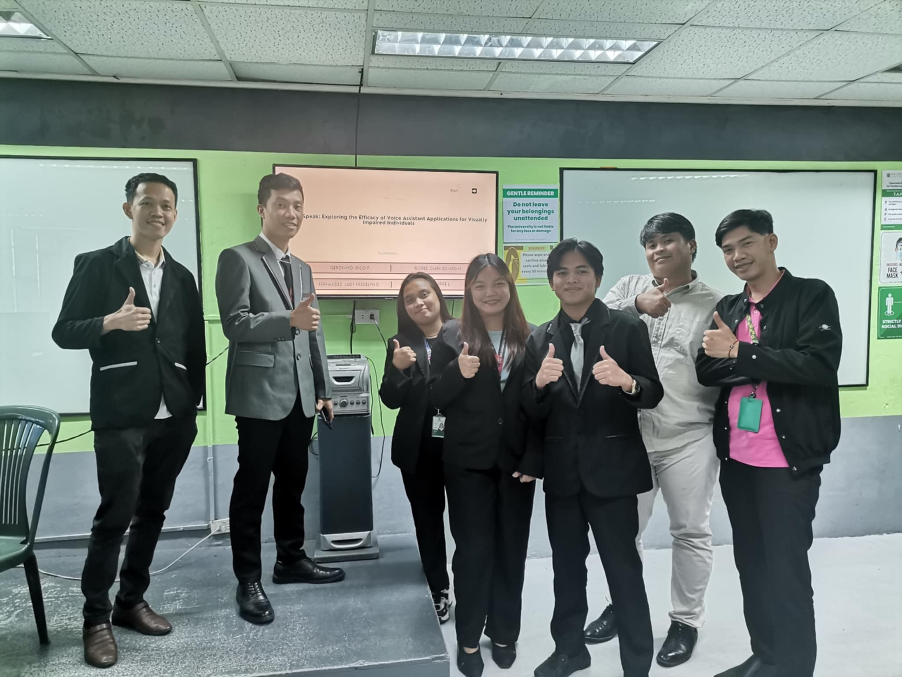
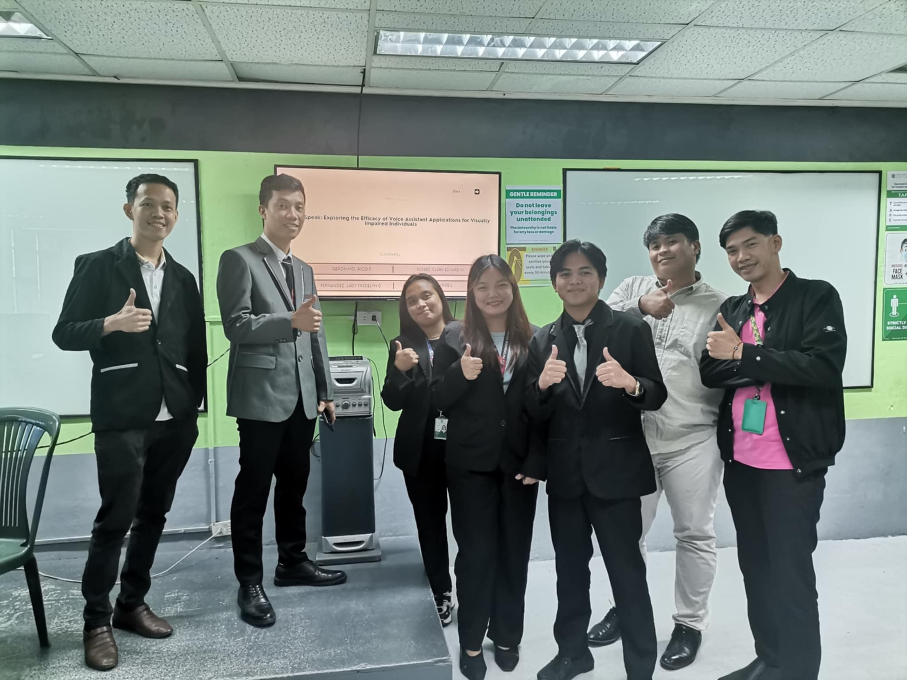
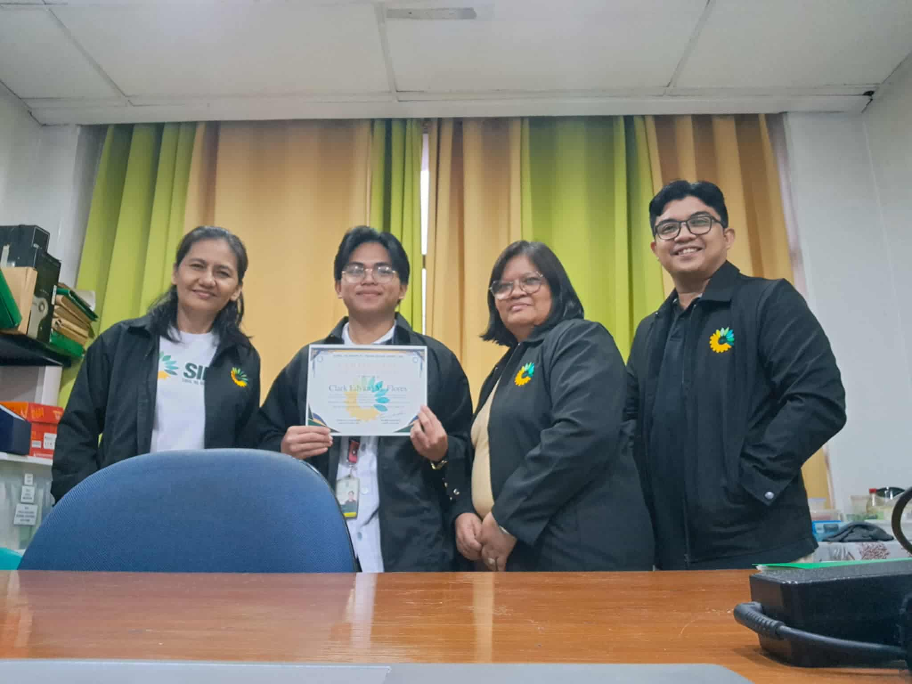
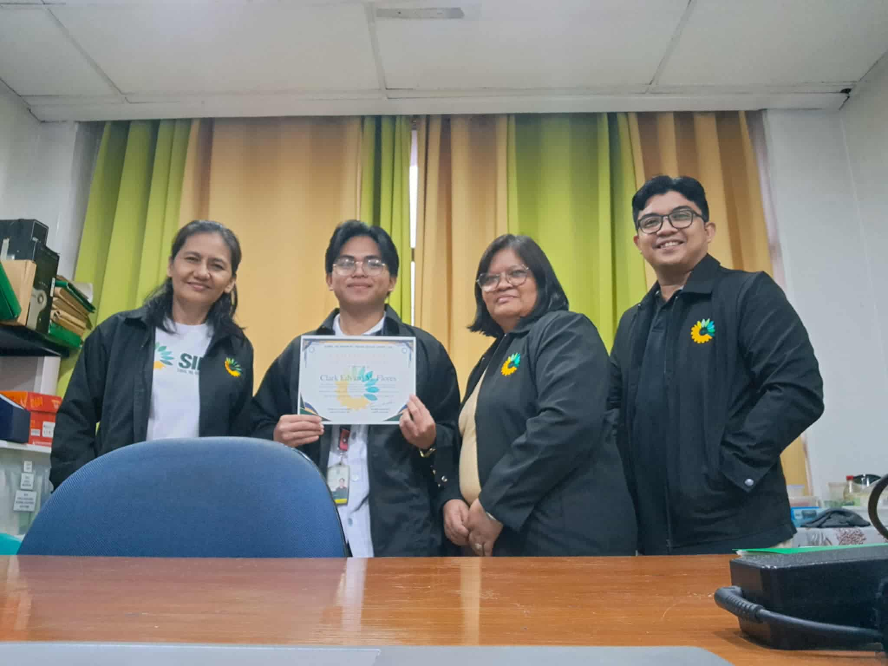

I graduated from Our Lady of Fatima University – Quezon City, with a Bachelor of Science in Information Technology on July 24, 2025.

I was born on June 20, 2000, in the peaceful community of Pondol, Balamban, Cebu, where my journey began.
My diploma 😍❤️🔥
This was the day of our Capstone Defense. I was extremely nervous, but I just thought, ‘Let’s do this—whatever happens, happens!
 

I completed my On-the-Job Training at Sibol ng Agham at Teknolohiya (SIBAT, Inc.), a non-governmental organization dedicated to advancing appropriate technology and sustainable development. I was assigned to the Administrative Office, where I assisted in managing office records, organizing documents, and providing IT-related support to daily operations.
 

My College Friends ❤️🔥
We are creating an RJ45 cable in our networking activity, where we learn how to attach the wires and connectors to make a LAN cable used for connecting computers to a network.
Working on Arduino projects
The truth about me is
This is Ma'am Cha, my pretty teacher in our Rizal class. ❤️🔥